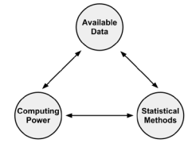
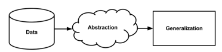
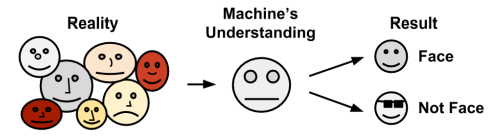
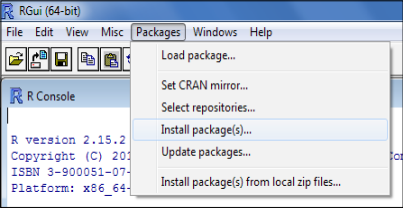
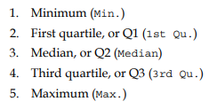
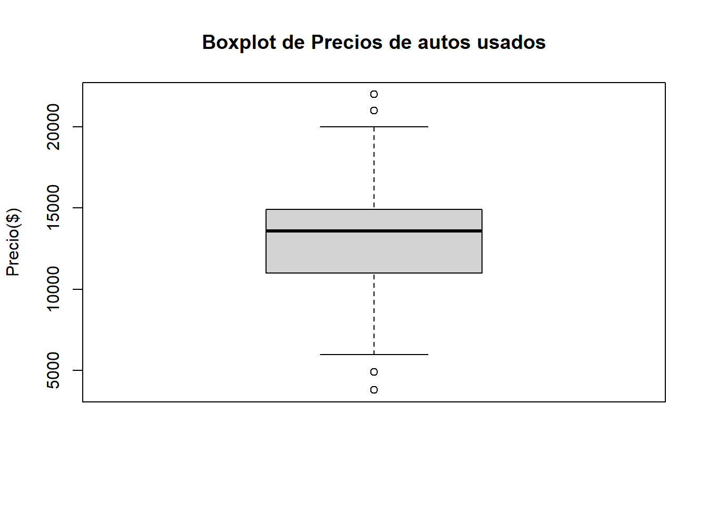
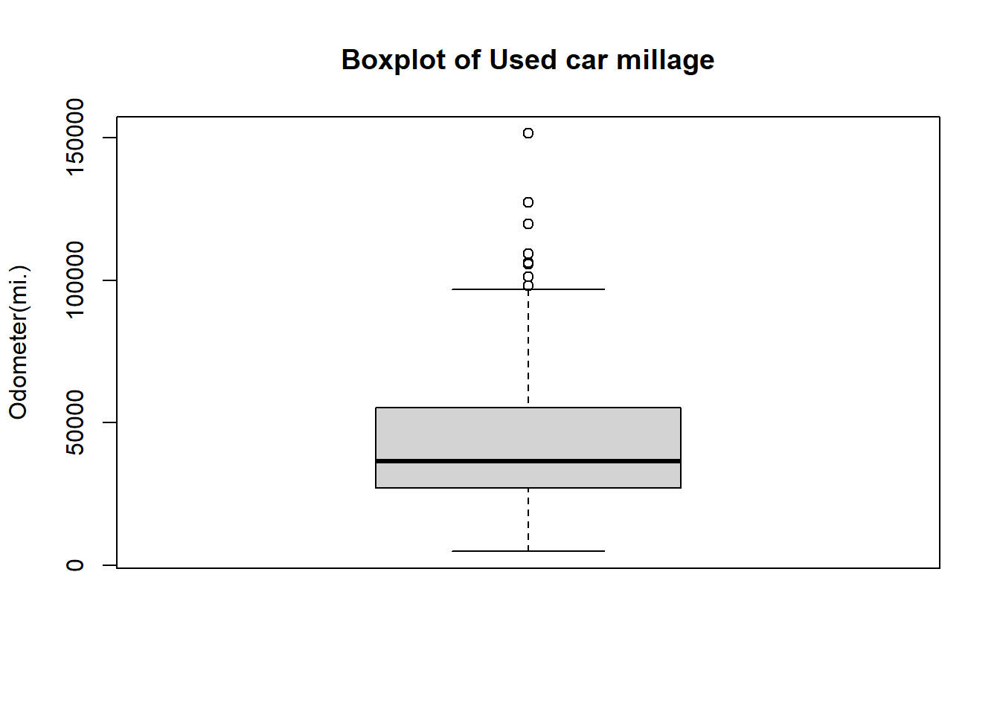
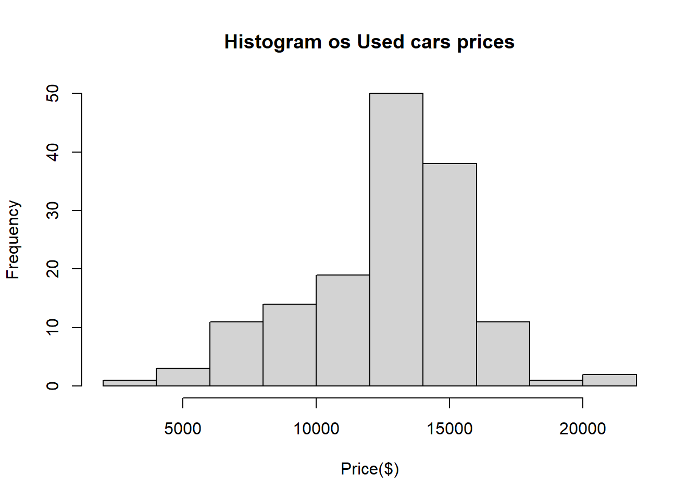
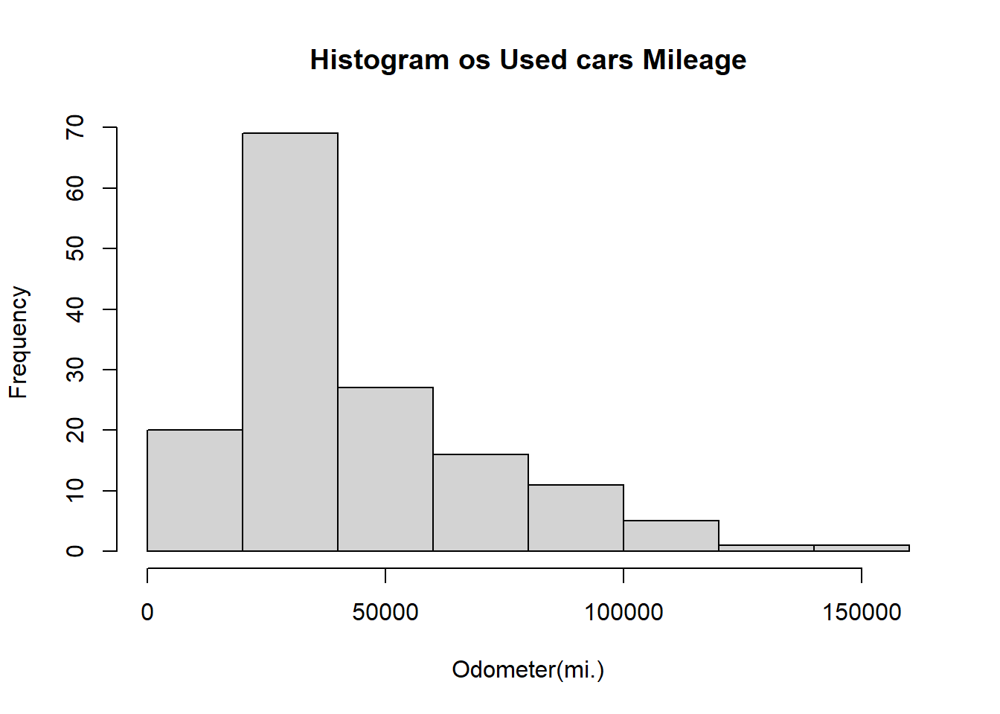

nombre_sujeto <-c("John Doe","Jane Doe","Steve Graves")
temperatura <-c(98.1,98.6,101.4)
estado_gripe<-c("FALSO","FALSO","VERDADERO")Informe_Dinamico
Capítulo 1: Introducción al aprendizaje automático
Orígenes del aprendizaje automático
El campo de estudio interesado en el desarrollo de algoritmos informáticos para la transformación de datos en acciones inteligentes se conoce como aprendizaje automático. Este campo se originó en un entorno donde los datos disponibles, los métodos estadísticos y el poder de cómputo evolucionaron rápida y simultáneamente. Esto creó un ciclo de avance que permitió recopilar datos aún más grandes e interesantes, además el procesamiento de datos está conectado con el aprendizaje automático.

Usos y abusos del aprendizaje automático
El aprendizaje automático está principalmente interesado en dar sentido a los datos complejos, siendo una misión ampliamente aplicable y en gran medida independiente de la aplicación, ejemplos de esto puede ser:
• Predecir los resultados de las elecciones
• Identifique y filtre los mensajes de spam del correo electrónico
• Prever actividad delictiva
• Automatice las señales de tráfico de acuerdo con las condiciones de la carretera
• Producir estimaciones financieras de tormentas y desastres naturales
• Examinar la rotación de clientes
• Crea aviones de pilotaje automático y coches de conducción automática.
• Identificar personas con capacidad para donar
• Dirigir la publicidad a tipos específicos de consumidores
Consideraciones éticas
Se debe tener precaución al obtener o analizar datos para evitar infringir leyes, violar términos de servicio o acuerdos de uso de datos, abusar de la confianza o violar la privacidad de los clientes o del público, ya que aparte de las consecuencias legales, el uso inapropiado de los datos puede perjudicar sus resultados. Los clientes pueden sentirse incómodos o asustados si se hacen públicos aspectos de sus vidas que consideran privados.
¿Cómo aprenden las máquinas?
La definición propuesta por un científico dice que una máquina aprende si es capaz de tomar experiencia y utilizarla de tal manera que su rendimiento mejore en experiencias similares en el futuro. Esta definición es bastante exacta, pero dice poco sobre cómo las técnicas de aprendizaje automático realmente aprenden a transformar los datos en conocimiento procesable.
El proceso básico de aprendizaje se puede dividir en tres componentes de la siguiente manera:
• Entrada de datos: utiliza la observación, el almacenamiento de memoria y el recuerdo para proporcionar una base fáctica para un razonamiento posterior.
• Abstracción: Implica la traducción de datos en representaciones más amplias.
• Generalización: utiliza datos abstractos para formar una base para la acción.

Abstracción y representación del conocimiento
La representación de datos de entrada sin procesar en un formato estructurado es la tarea por excelencia para un algoritmo de aprendizaje. Antes de este punto, los datos son simplemente unos y ceros en un disco o en la memoria; no tienen significado. El trabajo de asignar un significado a los datos ocurre durante la abstracción. Mientras que, las conexiones abstractas son la base de representación del conocimiento, la formación de estructuras lógicas que ayudan a convertir la información sensorial en bruto en una percepción significativa.
Durante el proceso de representación del conocimiento, la computadora resume las entradas sin procesar en un modelo, una descripción explícita de los patrones estructurados entre los datos y el proceso de ajustar un modelo particular a un conjunto de datos se conoce como capacitación.
Generalización
El término generalización describe el proceso de convertir el conocimiento abstracto en una forma que se puede utilizar para la acción. La generalización es un proceso algo vago que es un poco difícil de describir.
Los algoritmos de aprendizaje automático generalmente emplean atajos que dividen más rápidamente el conjunto de conceptos. Con este fin, el algoritmo empleará heurística, o conjeturas informadas sobre dónde encontrar los conceptos más importantes. Las heurísticas empleadas por los algoritmos de aprendizaje automático también dan lugar a veces a conclusiones erróneas. Si las conclusiones son sistemáticamente imprecisas, se dice que el algoritmo tiene una inclinación.
Por ejemplo, suponga que un algoritmo de aprendizaje automático aprendió a identificar caras al encontrar dos círculos u ojos, colocados uno al lado del otro sobre una línea para la boca. Entonces, el algoritmo podría tener problemas con las caras que no se ajustan a su modelo o estar sesgado contra ellas.

Evaluar el éxito del aprendizaje
Una vez que un modelo ha sido entrenado en un conjunto de datos inicial, el modelo se prueba en un nuevo conjunto de datos y se juzga en qué medida su caracterización de los datos de entrenamiento se generaliza a los nuevos datos; el hecho de que los modelos no generalicen perfectamente se debe al problema de ruido, o variaciones inexplicables en los datos. Los datos ruidosos son causados por eventos aparentemente aleatorios, como:
• Error de medición debido a sensores imprecisos que a veces suman o restan un bit de la lectura.
• Problemas con los datos de informes, como que los encuestados informen respuestas aleatorias a las preguntas de la encuesta para terminar más rápido.
• Errores causados cuando los datos se registran incorrectamente, incluidos valores faltantes, nulos, truncados, codificados incorrectamente o dañados.
Se dice que un modelo que parece funcionar bien durante el entrenamiento, pero lo hace mal durante las pruebas está sobre ajustado al conjunto de datos de entrenamiento, ya que no se generaliza bien.
Pasos para aplicar el aprendizaje automático a sus datos
1.Recolectando datos: datos escritos en papel, registrados en archivos de texto y hojas de cálculo, o almacenados en una base de datos SQL, deberá recopilarlos en un formato electrónico adecuado para el análisis.
2.Exploración y preparación de los datos: Este paso en el proceso de aprendizaje automático tiende a requerir una gran cantidad de intervención humana. Una estadística citada a menudo sugiere que el 80 por ciento del esfuerzo en el aprendizaje automático se dedica a los datos. Gran parte de este tiempo se dedica a aprender más sobre los datos y sus matices durante una práctica llamada exploración de datos.
3.Entrenamiento de un modelo en los datos: Para cuando los datos hayan sido preparados para el análisis, es probable que tenga una idea de lo que espera aprender de los datos. La tarea específica de aprendizaje automático informará la selección de un algoritmo apropiado, y el algoritmo representará los datos en forma de modelo.
4.Evaluación del rendimiento del modelo: Debido a que cada modelo de aprendizaje automático es importante evaluar qué tan bien aprendió el algoritmo a partir de su experiencia. Según el tipo de modelo utilizado, es posible que pueda evaluar la precisión del modelo mediante un conjunto de datos de prueba o que necesite desarrollar medidas de rendimiento específicas para la aplicación prevista.
5.Mejora del rendimiento del modelo: Si se necesita un mejor rendimiento, se hace necesario utilizar estrategias más avanzadas para aumentar el rendimiento del modelo. Es posible que deba complementar sus datos con datos adicionales o realizar un trabajo preparatorio adicional como en el paso dos de este proceso.
Elegir un algoritmo de aprendizaje automático
Elegir un algoritmo de aprendizaje automático implica hacer coincidir las características de los datos que se van a aprender con los sesgos de los enfoques disponibles. Dado que la elección de un algoritmo de aprendizaje automático depende en gran medida del tipo de datos que está analizando y de la tarea propuesta en cuestión.
Pensando en los datos de entrada
Todos los algoritmos de aprendizaje automático requieren datos de entrenamiento de entrada. El formato exacto puede diferir, pero en su forma más básica, los datos de entrada toman la forma de ejemplos y características.
Pensando en los tipos de algoritmos de aprendizaje automático
Los algoritmos de aprendizaje automático se pueden dividir en dos grupos principales: estudiantes supervisados que se usan para construir modelos predictivos y estudiantes no supervisados que se usan para construir modelos descriptivos.
El modelo predictivo se usa para tareas que involucran, como su nombre lo indica, la predicción de un valor usando otros valores en el conjunto de datos. El algoritmo de aprendizaje intenta descubrir y modelar la relación entre los objetivos característica. Los modelos predictivos reciben instrucciones claras sobre lo que necesitan aprender y cómo deben aprenderlo, el proceso de entrenamiento de un modelo predictivo se conoce como aprendizaje supervisado.
El modelo descriptivo se utiliza para tareas que se beneficiarían de la información obtenida al resumir datos de formas nuevas e interesantes. De hecho, debido a que no hay un objetivo para aprender, el proceso de entrenamiento de un modelo descriptivo se llama aprendizaje sin supervisión. La tarea de modelado descriptivo de dividir un conjunto de datos en grupos homogéneos se llama agrupamiento.
Hacer coincidir sus datos con un algoritmo apropiado
Para hacer coincidir una tarea de aprendizaje con un enfoque de aprendizaje automático, deberá comenzar con uno de los cuatro tipos de tareas: clasificación, predicción numérica, detección de patrones o agrupación. Para la clasificación, se necesita más pensamiento para hacer coincidir un problema de aprendizaje con un clasificador apropiado.
Uso de R para el aprendizaje automático
R es un software gratuito de código abierto, no hay cargo adicional por esta funcionalidad. Una colección de funciones de R que se pueden compartir entre los usuarios se denomina paquete. Existen paquetes gratuitos para cada uno de los algoritmos de aprendizaje automático.
Instalación y carga de paquetes R
A pesar del amplio conjunto de complementos de R disponibles, el formato del paquete hace que la instalación y el uso sean un proceso prácticamente sin esfuerzo.
Instalación de un paquete R
La forma más directa de instalar un paquete es a través de install.packages () function. Para instalar el RWeka package, en el símbolo del sistema R simplemente escriba:
> install.packages (“RWeka”)
R luego se conectará a CRAN y descargará el paquete en el formato correcto para su sistema operativo.
Instalación de un paquete mediante la interfaz de apuntar y hacer clic
R proporciona una interfaz gráfica de usuario (GUI) para la instalación del paquete. En un sistema Microsoft Windows, se puede acceder desde el Install package(s)elemento de comando bajo el Packages menu, como se muestra en la siguiente captura de pantalla.

Cargando un paquete R
Para conservar la memoria, R no carga todos los paquetes instalados de forma predeterminada. En su lugar, los paquetes son cargados por los usuarios a medida que se necesitan utilizando el library( ) function.
Capítulo 2: Gestión y comprensión de datos
Estructura de datos
Las estructuras de datos de R que se utilizan con mayor frecuencia en el aprendizaje automático son vectores, factores, listas, matrices y marcos de datos.
Vectores
La estructura de datos fundamental de R es el vector, que almacena un conjunto ordenado de valores llamado elementos. Un vector puede contener cualquier número de elementos. Sin embargo, todos los elementos deben ser del mismo tipo; por ejemplo, un vector no puede contener tanto números como texto.
Al vector también se le puede dar un nombre usando el operador de flecha <-, que es el operador de asignación de R, usado de manera similar al operador de asignación = en muchos otros lenguajes de programación.
Posterior a la creación de vectores, procedemos a llamarlos, dependiendo de lo que se necesite.
temperatura[2][1] 98.6temperatura[2:3][1] 98.6 101.4temperatura[-2][1] 98.1 101.4temperatura[c("VERDADERO","VERDADERO","FALSO")][1] NA NA NAFactores
Un factor es un caso especial de vector que se utiliza únicamente para representar variables nominales. Para crear un factor a partir de un personaje vector, simplemente aplique el factor ( )función. Por ejemplo:
sexo <- factor(c("MASCULINO","MUJER","MASCULINO"))
sexo[1] MASCULINO MUJER MASCULINO
Levels: MASCULINO MUJERCuando se crean factores, podemos agregar niveles adicionales que pueden no aparecer en los datos. Supongamos que agregamos otro factor para el tipo de sangre como se muestra en el siguiente ejemplo:
sangre <- factor(c("O","AB","A"),
niveles <- c("A","B","AB","O"))
sangre[1] O AB A
Levels: A B AB OLista
Otro tipo especial de vector, una lista, se usa para almacenar un conjunto ordenado de valores. Sin embargo, a diferencia de un vector que requiere que todos los elementos sean del mismo tipo, una lista permite recopilar diferentes tipos de valores.
nombre_sujeto[1][1] "John Doe"temperatura[1][1] 98.1estado_gripe[1][1] "FALSO"sexo[1][1] MASCULINO
Levels: MASCULINO MUJERsangre[1][1] O
Levels: A B AB OPara poder facilitar los datos, las lista pueden ser una buena opción
sujeto1 <- list(nombre_completo=nombre_sujeto[1],temperatura=temperatura[1],estado_gripe=estado_gripe[1],sexo=sexo[1],sangre=sangre[1])
sujeto1$nombre_completo
[1] "John Doe"
$temperatura
[1] 98.1
$estado_gripe
[1] "FALSO"
$sexo
[1] MASCULINO
Levels: MASCULINO MUJER
$sangre
[1] O
Levels: A B AB OMarcos de datos
El aprendizaje automático es el marco de datos, una estructura análoga a una hoja de cálculo o base de datos ya que tiene filas y columnas. Vamos a crear un marco de datos para nuestro conjunto de datos de pacientes. Usando los vectores de datos de pacientes que creamos previamente, data.frame( )la función los combina en un marco de datos:
pt_data <- data.frame(nombre_sujeto,temperatura,estado_gripe,sexo,sangre,stringsAsFactors =FALSE)
pt_data nombre_sujeto temperatura estado_gripe sexo sangre
1 John Doe 98.1 FALSO MASCULINO O
2 Jane Doe 98.6 FALSO MUJER AB
3 Steve Graves 101.4 VERDADERO MASCULINO APara extraer columnas enteras (vectores) de datos:
pt_data$nombre_sujeto[1] "John Doe" "Jane Doe" "Steve Graves"También similar a las listas, se puede usar un vector de nombres para extraer varias columnas de un marco de datos:}
pt_data[c("temperatura","estado_gripe")] temperatura estado_gripe
1 98.1 FALSO
2 98.6 FALSO
3 101.4 VERDADEROPara extraer el valor de la primera fila y la segunda columna del marco de datos del paciente (el valor de temperatura para John Doe), ingresaría:
pt_data[1,2][1] 98.1Si desea más de una fila o columna de datos, puede hacerlo especificando vectores para los números de fila y columna que desea, por ejemplo:
pt_data[c(1,3),c(2,4)] temperatura sexo
1 98.1 MASCULINO
3 101.4 MASCULINOPor ejemplo, para extraer todas las filas de la primera columna:
pt_data[,1][1] "John Doe" "Jane Doe" "Steve Graves"pt_data[1,] nombre_sujeto temperatura estado_gripe sexo sangre
1 John Doe 98.1 FALSO MASCULINO OY para extraer todo, sería:
pt_data[,] nombre_sujeto temperatura estado_gripe sexo sangre
1 John Doe 98.1 FALSO MASCULINO O
2 Jane Doe 98.6 FALSO MUJER AB
3 Steve Graves 101.4 VERDADERO MASCULINO AMátrices y arreglos
Las matrices R pueden contener cualquier tipo de datos, aunque se usan con mayor frecuencia para operaciones matemáticas y, por lo tanto, normalmente almacenan solo datos numéricos. Para crear una matriz, simplemente suministre un vector de datos al matrix( ) función.
NROW para solicitar que los parámetros se dividan en filas
m <- matrix(c('a','b','c','d'),nrow=2)
m [,1] [,2]
[1,] "a" "c"
[2,] "b" "d" NCOL para solicitar que los parámetros se dividan en columnas
m <- matrix(c('a','b','c','d'),ncol=2)
m [,1] [,2]
[1,] "a" "c"
[2,] "b" "d" De igual manera si se desea agregar más valores, en filas y colmnas sería:
m <- matrix(c('a','b','c','d','e','f'),nrow=2)
m [,1] [,2] [,3]
[1,] "a" "c" "e"
[2,] "b" "d" "f" m <- matrix(c('a','b','c','d','e','f'),ncol=2)
m [,1] [,2]
[1,] "a" "d"
[2,] "b" "e"
[3,] "c" "f" Gestión de datos con R
Guardar y cargar estructuras de datos R
Para guardar una estructura de datos en particular en un archivo que pueda volver a cargarse más tarde o transferirse a otro sistema, puede usar save( ) función. Si tuviéramos tres objetos llamados x, y, z, podríamos guardarlos en un archivo misdatos.RData usando el siguiente comando:
#### **Importar y guardar datos de archivos CSV**
Los archivos CSV se pueden importar y exportar desde muchas aplicaciones comunes. Un archivo CSV que represente el conjunto de datos médicos construido previamente tendría el siguiente aspecto, para cargar este archivo CSV en R, read.csv( ) se utiliza de la siguiente manera:
#### **Importación de datos de bases de datos SQL**
ODBC es un protocolo estándar para conectarse a bases de datos independientemente del sistema operativo o SGBD(Sistema de administración de base de datos).
#### **Exploración de datos**
Dado que el conjunto de datos se almacena en formato CSV, podemos usar read.csv( ) función para cargar los datos en un marco de datos R:
::: {.cell}
```{.r .cell-code}
usedcars <- read.csv("usedcars.csv", stringsAsFactors = FALSE):::
Explorando variables numéricas
Para investigar las variables numéricas en los datos de autos usados, emplearemos un conjunto de medidas de uso común para describir valores conocidos como resumen estadístico.
The summary ( ) muestra varias estadísticas resumidas comunes, incluso si no está familiarizado con las estadísticas resumidas, es posible que pueda adivinar algunas de ellas a partir del encabezado.
Medición de la tendencia central: media y mediana
Las medidas de tendencia central son una clase de estadísticas que se utilizan para identificar un valor que se encuentra en el medio de un conjunto de datos. En estadística, el promedio también se conoce como significar, una medida definida como la suma de todos los valores dividida por el número de valores.
R también proporciona una mean( ) function, que calcula la media de un vector de números:
mean(c(36000,44000,56000))[1] 45333.33Otra medida de tendencia central de uso común es la mediana, que es el valor que aparece en la mitad de una lista ordenada de valores. Al igual que con la media, R proporciona median( ) function que podemos aplicar a nuestros datos salariales como se muestra en el siguiente ejemplo:
median(c(36000,44000,56000))[1] 44000Medición de la dispersión: cuartiles y el resumen de cinco números
Para medir la diversidad, necesitamos emplear otro tipo de estadísticas resumidas, o qué tan apretado o suelto están espaciados los valores. Conocer la dispersión proporciona una idea de los máximos y mínimos de los datos, y si la mayoría de los valores son similares o diferentes a la media y la mediana.
El resumen de cinco números es un conjunto de cinco estadísticas que representan aproximadamente la dispersión de un conjunto de datos. Las cinco estadísticas se incluyen en el resultado del summary( ) función. Escritos en orden, son:

El lapso entre el valor mínimo y máximo se conoce como rango. En R, el range( ). La función devuelve tanto el valor mínimo como el máximo. Combinatorio range( )con la función diferencia ,diff( ) le permite examinar el rango de datos con un solo comando.
range(usedcars$price)[1] 3800 21992diff(range(usedcars$price))[1] 18192Los cuartiles primero y tercero, Q1 y Q3, se refieren al valor por debajo o por encima del cual se encuentra una cuarta parte de los valores. Junto con la mediana (Q2), los cuartiles dividen un conjunto de datos en cuatro partes, cada una con el mismo número de valores.
La diferencia entre Q1 y Q3 se conoce como rango intercuartil (IQR), y se puede calcular con la IQR( ) función:
IQR(usedcars$price)[1] 3909.5El quantile () proporciona una herramienta robusta para identificar cuantiles para un conjunto de valores. Por defecto, el quantile ( ), la función devuelve el resumen de cinco números.
quantile(usedcars$price) 0% 25% 50% 75% 100%
3800.0 10995.0 13591.5 14904.5 21992.0 Si especificamos un adicional problemas parámetro usando un vector que denota puntos de corte, podemos obtener cuantiles arbitrarios, como los percentiles 1 y 99:
quantile(usedcars$price, probs=c(0.01, 0.99)) 1% 99%
5428.69 20505.00 Visualización de variables numéricas: diagramas de caja
La visualización de variables numéricas puede ser útil para diagnosticar muchos problemas con los datos. Una visualización común del resumen de cinco números es un diagrama de caja o caja y bigotes.
boxplot(usedcars$price, main="Boxplot de Precios de autos usados", ylab="Precio($)")
boxplot(usedcars$mileage, main="Boxplot of Used car millage", ylab="Odometer(mi.)")
Visualización de variables numéricas – histogramas
Los histogramas son otra forma de representar gráficamente la dispersión de una variable numérica. Es similar a un diagrama de caja en que divide los valores de la variable en un número predefinido de porciones, o contenedores que actúan como contenedores de valores. Un histograma utiliza cualquier número de contenedores de idéntico ancho, pero permite que los contenedores contengan diferentes números de valores.
hist(usedcars$price, main="Histogram os Used cars prices", xlab="Price($)")
hist(usedcars$mileage, main="Histogram os Used cars Mileage", xlab="Odometer(mi.)")
También puede notar que la forma de los dos histogramas es algo diferente. Parece que los precios de los autos usados tienden a dividirse equitativamente a ambos lados del medio, mientras que el kilometraje de los autos se extiende más hacia la derecha.
Esta característica se conoce como sesgar, específicamente sesgo a la derecha, porque los valores en el extremo superior (lado derecho) están mucho más dispersos que los valores en el extremo inferior (lado izquierdo).
Comprensión de datos numéricos: distribuciones uniformes y normales
Los histogramas, los diagramas de caja y las estadísticas que describen el centro y la dispersión proporcionan formas de examinar la distribución de los valores de una variable. La distribución de una variable describe la probabilidad de que un valor caiga dentro de varios rangos. Una distribución uniforme es fácil de detectar con un histograma porque las barras tienen aproximadamente la misma altura, es importante tener en cuenta que no todos los eventos aleatorios son uniformes.
La distribución normal es cuando parece que es menos probable que ocurran valores a medida que se alejan de ambos lados de la barra central, lo que da como resultado una distribución de datos en forma de campana.
Medición de la dispersión: varianza y desviación estándar
La distribución normal, que describe muchos tipos de datos del mundo real, se puede definir con solo dos: centro y dispersión. El centro de la distribución normal se define por su valor medio, que hemos utilizado antes. La propagación se mide mediante una estadística llamada Desviación Estándar.Para calcular la desviación estándar, primero debemos obtener la diferencia, que se define como la media de las diferencias al cuadrado entre cada valor y el valor medio.
Para obtener la varianza y la desviación estándar en R, se pueden utilizar las siguientes funciones:
var(usedcars$price)[1] 9749892sd(usedcars$price)[1] 3122.482var(usedcars$mileage)[1] 728033954sd(usedcars$mileage)[1] 26982.1Explorando variables categóricas
A diferencia de los datos numéricos, los datos categóricos se examinan mediante tablas en lugar de estadísticas de resumen. Una tabla que presenta una sola variable categórica se conoce como tabla unidireccional.
table(usedcars$year)
2000 2001 2002 2003 2004 2005 2006 2007 2008 2009 2010 2011 2012
3 1 1 1 3 2 6 11 14 42 49 16 1 table(usedcars$model)
SE SEL SES
78 23 49 table(usedcars$color)
Black Blue Gold Gray Green Red Silver White Yellow
35 17 1 16 5 25 32 16 3 R también puede realizar el cálculo de las proporciones de la tabla directamente usando el prop.table ( ).
model.table <- table(usedcars$model)
prop.table(model.table)
SE SEL SES
0.5200000 0.1533333 0.3266667 Medición de la tendencia central: la moda
La moda de una característica es el valor que ocurre con mayor frecuencia. Al igual que la media y la mediana, la moda es otra medida de tendencia central. A menudo se usa para datos categóricos, ya que la media y la mediana no están definidas para variables nominales.
Pensar en las modas como valores comunes nos permite aplicar el concepto de moda estadística a los datos numéricos. Estrictamente hablando, sería poco probable tener una moda para una variable continua, ya que es probable que no se repitan dos valores. Sin embargo, si pensamos en las modas como las barras más altas de un histograma, podemos analizar las modas de variables.
Explorando relaciones entre variables
- Visualización de relaciones: diagramas de dispersión
El gráfico de dispersiones un diagrama que visualiza una relación bi variada. Es una figura bidimensional en la que se dibujan puntos en un plano de coordenadas utilizando los valores de una característica para proporcionar la horizontal, X coordenadas, Y. Los patrones en la ubicación de los puntos revelan asociaciones subyacentes entre las dos características.
El comando completo para crear nuestro diagrama de dispersión es:
plot(x=usedcars$mileage, y=usedcars$price, main="Scatterplot of Price vs. Mileage",xlab="Used Car Odometer (mi.)", ylab="Used Car Price ($)")
La fuerza de una asociación lineal entre dos variables se mide mediante una estadística conocida como correlación.
Examen de las relaciones: tabulaciones cruzadas de dos factores
Para examinar una relación entre dos variables nominales, una tabulación cruzada de dos vías se utiliza (también conocido como tabulación cruzada o contingencia mesa). Una tabulación cruzada es similar a un diagrama de dispersión en el sentido de que le permite examinar cómo los valores de una variable varían según los valores de otra.
El formato es una tabla en la que las filas son los niveles de una variable mientras que las columnas son los niveles de otra. Los conteos en cada una de las celdas de la tabla indican el número de valores que caen en la combinación particular de fila y columna.
Crearemos una variable indicadora binaria:
#install.packages("gmodels")
library(gmodels)usedcars$conservative <- usedcars$color %in% c("Black","Gray","Silver","White")table(usedcars$conservative)
FALSE TRUE
51 99 CrossTable(x= usedcars$model, y= usedcars$conservative)
Cell Contents
|-------------------------|
| N |
| Chi-square contribution |
| N / Row Total |
| N / Col Total |
| N / Table Total |
|-------------------------|
Total Observations in Table: 150
| usedcars$conservative
usedcars$model | FALSE | TRUE | Row Total |
---------------|-----------|-----------|-----------|
SE | 27 | 51 | 78 |
| 0.009 | 0.004 | |
| 0.346 | 0.654 | 0.520 |
| 0.529 | 0.515 | |
| 0.180 | 0.340 | |
---------------|-----------|-----------|-----------|
SEL | 7 | 16 | 23 |
| 0.086 | 0.044 | |
| 0.304 | 0.696 | 0.153 |
| 0.137 | 0.162 | |
| 0.047 | 0.107 | |
---------------|-----------|-----------|-----------|
SES | 17 | 32 | 49 |
| 0.007 | 0.004 | |
| 0.347 | 0.653 | 0.327 |
| 0.333 | 0.323 | |
| 0.113 | 0.213 | |
---------------|-----------|-----------|-----------|
Column Total | 51 | 99 | 150 |
| 0.340 | 0.660 | |
---------------|-----------|-----------|-----------|